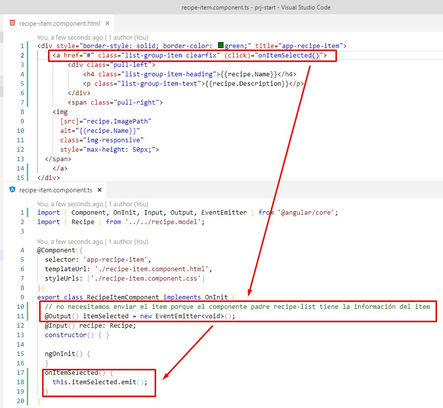
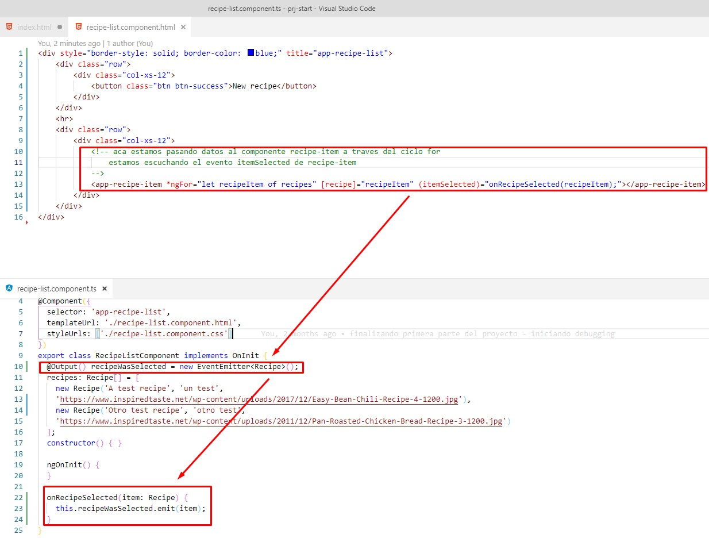

Comunicación entre componentes, al hacer click en un item de la lista, aparezca el detalle
Se comienza por el componente más interno

Ahora es el componente recipe-list que escucha el evento itemSelected del componente recipe-item. Posteriormente va a pasar la informacion de ese evento a su componente padre recipes-component, esto porque la comunicación entre componentes
usando @input y @output solo es posible en un solo nivel.
